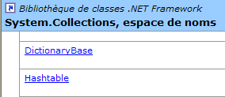
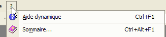
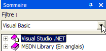
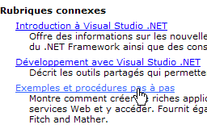
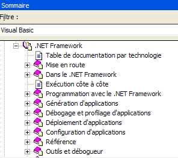
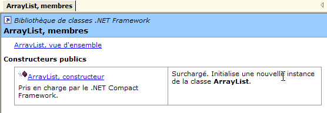
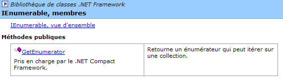

4. Häufig verwendete .NET-Klassen
Hier stellen wir einige Klassen der .NET-Plattform vor, die auch für Anfänger interessant sind. Zunächst zeigen wir, wie man Informationen über die Hunderte verfügbarer Klassen erhält.
4.1. Hilfe bei SDK.NET
4.1.1. wincv
Wenn Sie nur das SDK und nicht Visual Studio.NET installiert haben, können Sie das Programm „wincv.exe“ verwenden, das sich in der Regel im SDK-Verzeichnis befindet, zum Beispiel unter „C:\Program Files\Microsoft Visual Studio .NET 2003\SDK\v1.1“. Wenn Sie dieses Dienstprogramm starten, wird die folgende Benutzeroberfläche angezeigt:
 |
Geben Sie den Namen der gewünschten Klasse in (1) ein. Daraufhin werden in (2) verschiedene mögliche Optionen angezeigt. Wählen Sie die passende aus, und das Ergebnis erscheint in (3) – in diesem Fall die HashTable-Klasse. Diese Methode eignet sich, wenn Sie den Namen der gesuchten Klasse kennen. Wenn Sie die Liste der von der .NET-Plattform angebotenen Optionen erkunden möchten, können Sie die HTML-Datei StartHere.htm verwenden, die sich ebenfalls direkt im SSK.Net-Installationsordner befindet, zum Beispiel C:\Program Files\Microsoft Visual Studio .NET 2003\SDK\v1.

Über den Link „.NET Framework SDK Documentation“ erhalten Sie einen Überblick über die .NET-Klassen:

Klicken Sie dort auf den Link [Class Library]. Er enthält eine Liste aller .NET-Klassen:

Folgen wir zum Beispiel dem Link „System.Collections“. Dieser Namespace enthält verschiedene Klassen, die Sammlungen implementieren, darunter die HashTable-Klasse:

Folgen wir dem unten stehenden Link zu „HashTable“:

Wir gelangen auf die folgende Seite:

Beachten Sie die Position des Cursors unten. Er zeigt auf einen Link, über den Sie die gewünschte Sprache auswählen können, in diesem Fall Visual Basic.
Hier finden Sie den Klassenprototyp sowie Anwendungsbeispiele. Klicken Sie unten auf den Link [Hashtable, Members]:

Wir erhalten die vollständige Beschreibung der Klasse:

Diese Methode ist der beste Weg, um das SDK und seine Klassen zu erkunden. Das WinCV-Tool ist nützlich, wenn Sie bereits ein wenig über die Klasse wissen, aber einige ihrer Mitglieder vergessen haben. Mit WinCV können Sie dann die Klasse und ihre Mitglieder schnell finden.
4.2. Hilfe zu Klassen mit VS.NET suchen
Hier sind einige Tipps zum Auffinden von Hilfe in Visual Studio.NET
4.2.1. Hilfe-Option
Wählen Sie die Option [?] aus dem Menü.

Das folgende Fenster wird angezeigt:

In der Dropdown-Liste können Sie einen Hilfefilter auswählen. Hier wählen wir den Filter [Visual Basic].

Zwei Arten von Hilfe sind nützlich:
- Hilfe zur VB.NET-Sprache selbst (Syntax)
- Hilfe zu den .NET-Klassen, die von der Sprache VB.NET verwendet werden können
Die Hilfe zur Sprache VB.NET ist über [Visual Studio.NET/Visual Basic und Visual C#/Referenz/Visual Basic] zugänglich:

Dadurch wird die folgende Hilfeseite angezeigt:

Von dort aus bieten die verschiedenen Unterrubriken Hilfe zu verschiedenen VB.NET-Themen. Achten Sie besonders auf die VB.NET-Tutorials:

Um auf die verschiedenen Klassen der .NET-Plattform zuzugreifen, wählen Sie die Hilfe [Visual Studio.NET/.NET Framework].

Wir konzentrieren uns insbesondere auf den Abschnitt [Referenz/Klassenbibliothek]:

Angenommen, wir interessieren uns für die Klasse [ArrayList]. Sie befindet sich im Namespace [System.Collections]. Es ist wichtig, dies zu wissen; andernfalls würden wir die unten beschriebene Suchmethode bevorzugen. Wir erhalten folgende Hilfe:

Der Link [ArrayList, Klasse] bietet einen Überblick über die Klasse:

Diese Art von Seite gibt es für alle Klassen. Sie bietet eine Zusammenfassung der Klasse mit Beispielen. Eine Beschreibung der Klassenelemente finden Sie unter dem Link [ArrayList, members]:

4.2.2. Hilfe/Index

Mit der Option [Hilfe/Index] können Sie gezielter nach Hilfe suchen als mit der vorherigen Methode. Geben Sie einfach das gesuchte Stichwort ein:

Der Vorteil dieser Methode gegenüber der vorherigen besteht darin, dass Sie nicht wissen müssen, wo Sie das Gesuchte im Hilfesystem finden. Dies ist wahrscheinlich die bevorzugte Methode für gezielte Suchen, während die andere Methode besser geeignet ist, um das gesamte Angebot des Hilfesystems zu erkunden.
4.3. Die String-Klasse
Die String-Klasse verfügt über viele Eigenschaften und Methoden. Hier sind einige davon:
Anzahl der Zeichen in der Zeichenfolge | |
Standardmäßige indizierte Eigenschaft. [String].Chars(i) ist das i-te Zeichen der Zeichenfolge | |
Gibt „true“ zurück, wenn die Zeichenfolge mit „value“ endet | |
Gibt „true“ zurück, wenn die Zeichenfolge mit dem Wert beginnt | |
gibt „true“ zurück, wenn die Zeichenfolge mit dem Wert übereinstimmt | |
gibt die erste Position in der Zeichenfolge zurück, an der der Zeichenfolgenwert gefunden wird – die Suche beginnt bei Zeichen 0 | |
Gibt die Position des ersten Vorkommens des Zeichenfolgenwerts in der Zeichenfolge zurück – die Suche beginnt am Zeichenindex startIndex | |
Klassenmethode – gibt eine Zeichenfolge zurück, die durch Verknüpfung der Werte im Array „value“ mit dem Trennzeichen „separator“ entsteht | |
gibt eine Kopie der aktuellen Zeichenfolge zurück, in der das Zeichen oldChar durch das Zeichen newChar ersetzt wurde | |
Die Zeichenfolge wird als eine Folge von Feldern behandelt, die durch die Zeichen im Trennzeichen-Array getrennt sind. Das Ergebnis ist ein Array dieser Felder | |
Ein Teilstring der aktuellen Zeichenfolge, beginnend an der Position startIndex und mit einer Länge von length Zeichen | |
konvertiert die aktuelle Zeichenfolge in Kleinbuchstaben | |
wandelt die aktuelle Zeichenfolge in Großbuchstaben um | |
entfernt führende und nachgestellte Leerzeichen aus der aktuellen Zeichenfolge |
Ein C-Zeichenkette kann als ein Array von Zeichen betrachtet werden. Somit
- ist C.Chars(i) das i-te Zeichen von C
- C.Length die Anzahl der Zeichen in C
Betrachten Sie das folgende Beispiel:
' options
Option Strict On
Option Explicit On
' namespaces
Imports System
Module test
Sub Main()
Dim uneChaine As String = "l'oiseau vole au-dessus des nuages"
affiche("uneChaine=" + uneChaine)
affiche("uneChaine.Length=" & uneChaine.Length)
affiche("chaine[10]=" + uneChaine.Chars(10))
affiche("uneChaine.IndexOf(""vole"")=" & uneChaine.IndexOf("vole"))
affiche("uneChaine.IndexOf(""x"")=" & uneChaine.IndexOf("x"))
affiche("uneChaine.LastIndexOf('a')=" & uneChaine.LastIndexOf("a"c))
affiche("uneChaine.LastIndexOf('x')=" & uneChaine.LastIndexOf("x"c))
affiche("uneChaine.Substring(4,7)=" + uneChaine.Substring(4, 7))
affiche("uneChaine.ToUpper()=" + uneChaine.ToUpper())
affiche("uneChaine.ToLower()=" + uneChaine.ToLower())
affiche("uneChaine.Replace('a','A')=" + uneChaine.Replace("a"c, "A"c))
Dim champs As String() = uneChaine.Split(Nothing)
Dim i As Integer
For i = 0 To champs.Length - 1
affiche("champs[" & i & "]=[" & champs(i) & "]")
Next i
affiche("Join("":"",champs)=" + System.String.Join(":", champs))
affiche("("" abc "").Trim()=[" + " abc ".Trim() + "]")
End Sub
' poster
Sub affiche(ByVal msg As [String])
' poster msg
Console.Out.WriteLine(msg)
End Sub
End Module
Die Ausführung liefert folgende Ergebnisse:
dos>vbc string1.vb
dos>string1
uneChaine=l'bird flies above the clouds
uneChaine.Length=34
chaine[10]=o
uneChaine.IndexOf("vole")=9
uneChaine.IndexOf("x")=-1
uneChaine.LastIndexOf('a')=30
uneChaine.LastIndexOf('x')=-1
uneChaine.Substring(4,7)=seau vo
uneChaine.ToUpper()=L'OISEAU VOLE ABOVE DES NUAGES
uneChaine.ToLower()=l'bird flies above the clouds
uneChaine.Replace('a','A')=l'oiseAu flies Over the nuAges
champs[0]=[l'bird]
champs[1]=[vole]
champs[2]=[au-dessus]
champs[3]=[des]
champs[4]=[nuages]
Join(":",champs)=l'bird:flies:above:clouds
(" abc ").Trim()=[abc]
Betrachten wir ein neues Beispiel:
' options
Option Strict On
Option Explicit On
' namespaces
Imports System
Module string2
Sub Main()
' the line to be analyzed
Dim ligne As String = "un:deux::trois:"
' field separators
Dim séparateurs() As Char = {":"c}
' split
Dim champs As String() = ligne.Split(séparateurs)
Dim i As Integer
For i = 0 To champs.Length - 1
Console.Out.WriteLine(("Champs[" & i & "]=" & champs(i)))
Next i
' join
Console.Out.WriteLine(("join=[" + System.String.Join(":", champs) + "]"))
End Sub
End Module
und die Ausführungsergebnisse:
Mit der Methode Split der Klasse String können Sie die Felder einer Zeichenkette in ein Array einfügen. Die Definition der hier verwendeten Methode lautet wie folgt:
Zeichenarray. Diese Zeichen stellen die Zeichen dar, die zur Trennung der Felder in der Zeichenfolge verwendet werden. Wenn die Zeichenfolge also [Feld1, Feld2, Feld3] lautet, können wir separator=new char() {","c} verwenden. Wenn das Trennzeichen eine Folge von Leerzeichen ist, verwenden wir separator=nothing. | |
Array von Zeichenfolgen, wobei jedes Element ein Feld der Zeichenfolge ist. |
Die Join-Methode ist eine statische Methode der String-Klasse:
Array von Zeichenfolgen | |
eine Zeichenkette, die als Feldtrennzeichen dient | |
eine Zeichenkette, die durch Verknüpfung der Elemente des Wert-Arrays gebildet wird, getrennt durch die Trennzeichen-Zeichenkette. |
4.4. Die Array-Klasse
Die Array-Klasse implementiert ein Array. In unserem Beispiel verwenden wir die folgenden Eigenschaften und Methoden:
Eigenschaft – Anzahl der Elemente im Array | |
Klassenmethode – gibt die Position von value im sortierten Array zurück – sucht beginnend bei Position index und über eine Länge von length Elementen | |
Klassenmethode – kopiert die ersten length Elemente von sourceArray in destinationArray – destinationArray wird speziell für diesen Zweck erstellt | |
Klassenmethode – sortiert das Array – das Array muss einen Datentyp mit einer Standard-Sortierfunktion enthalten (Zeichenfolgen, Zahlen). |
Das folgende Programm veranschaulicht die Verwendung der Array-Klasse:
' options
Option Strict On
Option Explicit On
' namespaces
Imports System
Module test
Sub Main()
' read table elements typed on keyboard
Dim terminé As [Boolean] = False
Dim i As Integer = 0
Dim éléments1 As Double() = Nothing
Dim éléments2 As Double() = Nothing
Dim élément As Double = 0
Dim réponse As String = Nothing
Dim erreur As [Boolean] = False
While Not terminé
' question
Console.Out.Write(("Elément (réel) " & i & " du tableau (rien pour terminer) : "))
' reading the answer
réponse = Console.ReadLine().Trim()
' end of input if string empty
If réponse.Equals("") Then
Exit While
End If
' input verification
Try
élément = [Double].Parse(réponse)
erreur = False
Catch
Console.Error.WriteLine("Saisie incorrecte, recommencez")
erreur = True
End Try
' if no error
If Not erreur Then
' new table to accommodate the new element
éléments2 = New Double(i) {}
' copy old panel to new panel
If i <> 0 Then
Array.Copy(éléments1, éléments2, i)
End If
' new table becomes old table
éléments1 = éléments2
' no need for the new panel
éléments2 = Nothing
' insert new element
éléments1(i) = élément
' one more element in the picture
i += 1
End If
End While
' unsorted table display
System.Console.Out.WriteLine("Tableau non trié")
For i = 0 To éléments1.Length - 1
Console.Out.WriteLine(("éléments[" & i & "]=" & éléments1(i)))
Next i
' table sorting
System.Array.Sort(éléments1)
' sorted table display
System.Console.Out.WriteLine("Tableau trié")
For i = 0 To éléments1.Length - 1
Console.Out.WriteLine(("éléments[" & i & "]=" & éléments1(i)))
Next i
' Search
While Not terminé
' question
Console.Out.Write("Elément cherché (rien pour arrêter) : ")
' reading-checking response
réponse = Console.ReadLine().Trim()
' finished?
If réponse.Equals("") Then
Exit While
End If
' check
Try
élément = [Double].Parse(réponse)
erreur = False
Catch
Console.Error.WriteLine("Saisie incorrecte, recommencez")
erreur = True
End Try
' if no error
If Not erreur Then
' search for the element in the sorted array
i = System.Array.BinarySearch(éléments1, 0, éléments1.Length, élément)
' Display response
If i >= 0 Then
Console.Out.WriteLine(("Trouvé en position " & i))
Else
Console.Out.WriteLine("Pas dans le tableau")
End If
End If
End While
End Sub
End Module
Die Bildschirmausgabe sieht wie folgt aus:
Elément (réel) 0 du tableau (rien pour terminer) : 10,4
Elément (réel) 1 du tableau (rien pour terminer) : 5,2
Elément (réel) 2 du tableau (rien pour terminer) : 8,7
Elément (réel) 3 du tableau (rien pour terminer) : 3,6
Elément (réel) 4 du tableau (rien pour terminer) :
Tableau non trié
éléments[0]=10,4
éléments[1]=5,2
éléments[2]=8,7
éléments[3]=3,6
Tableau trié
éléments[0]=3,6
éléments[1]=5,2
éléments[2]=8,7
éléments[3]=10,4
Elément cherché (rien pour arrêter) : 8,7
Trouvé en position 2
Elément cherché (rien pour arrêter) : 11
Pas dans le tableau
Elément cherché (rien pour arrêter) : a
Saisie incorrecte, recommencez
Elément cherché (rien pour arrêter) :
Der erste Teil des Programms erstellt ein Array aus numerischen Daten, die über die Tastatur eingegeben werden. Das Array kann nicht vordefiniert werden, da wir nicht wissen, wie viele Elemente der Benutzer eingeben wird. Wir arbeiten daher mit zwei Arrays, elements1 und elements2.
' nouveau tableau pour accueillir le nouvel élément
éléments2 = New Double(i) {}
' copie ancien tableau vers nouveau tableau
If i <> 0 Then
Array.Copy(éléments1, éléments2, i)
End If
' nouveau tableau devient ancien tableau
éléments1 = éléments2
' plus besoin du nouveau tableau
éléments2 = Nothing
' insertion nouvel élément
éléments1(i) = élément
' un élémt de plus dans le tableau
i += 1
Das Array elements1 enthält die aktuell eingegebenen Werte. Wenn der Benutzer einen neuen Wert hinzufügt, erstellen wir ein Array elements2 mit einem Element mehr als elements1, kopieren den Inhalt von elements1 in elements2 (Array.Copy), setzen elements1 so, dass es auf elements2 verweist, und fügen schließlich das neue Element zu elements1 hinzu. Dies ist ein komplexer Vorgang, der vereinfacht werden kann, indem anstelle eines Arrays mit fester Größe (Array) ein Array mit variabler Größe (ArrayList) verwendet wird.
Das Array wird mit der Methode Array.Sort sortiert. Diese Methode kann mit verschiedenen Parametern aufgerufen werden, die die Sortierregeln festlegen. Ohne Parameter erfolgt standardmäßig eine aufsteigende Sortierung. Schließlich ermöglicht die Methode **Array.BinarySearch** die Suche nach einem Element in einem sortierten Array.
4.5. Die ArrayList-Klasse
Die ArrayList-Klasse ermöglicht es Ihnen, Arrays mit variabler Größe während der Programmausführung zu implementieren, was mit der vorherigen Array-Klasse nicht möglich ist. Hier sind einige der gängigen Eigenschaften und Methoden:
Erstellt eine leere Liste | |
Anzahl der Elemente in der Sammlung | |
Fügt das Wert-Objekt am Ende der Sammlung hinzu | |
Löscht die Liste | |
Index des Wert-Objekts in der Liste oder -1, falls es nicht vorhanden ist | |
Wie oben, jedoch beginnend mit dem Element startIndex | |
Wie oben, gibt jedoch den Index des letzten Vorkommens von „value“ in der Liste zurück | |
Wie oben, beginnt jedoch mit dem Element an der Position startIndex | |
Entfernt das Objekt obj, sofern es in der Liste vorhanden ist | |
Entfernt das Element an der Position index aus der Liste | |
Gibt die Position des Wert-Objekts in der Liste zurück oder -1, wenn es nicht gefunden wird. Die Liste muss sortiert sein | |
Sortiert die Liste. Die Liste muss Objekte mit einer vordefinierten Reihenfolgebeziehung enthalten (Zeichenfolgen, Zahlen) | |
sortiert die Liste gemäß der durch die Vergleichsfunktion festgelegten Reihenfolge |
Schauen wir uns das Beispiel mit Array-Objekten noch einmal an und wenden es auf ArrayList-Objekte an:
' options
Option Strict On
Option Explicit On
' namespaces
Imports System
Imports System.Collections
Module test
Sub Main()
' read table elements typed on keyboard
Dim terminé As [Boolean] = False
Dim i As Integer = 0
Dim éléments As New ArrayList
Dim élément As Double = 0
Dim réponse As String = Nothing
Dim erreur As [Boolean] = False
While Not terminé
' question
Console.Out.Write(("Elément (réel) " & i & " du tableau (rien pour terminer) : "))
' reading the answer
réponse = Console.ReadLine().Trim()
' end of input if string empty
If réponse.Equals("") Then
Exit While
End If
' input verification
Try
élément = Double.Parse(réponse)
erreur = False
Catch
Console.Error.WriteLine("Saisie incorrecte, recommencez")
erreur = True
End Try
' if no error
If Not erreur Then
' one more element in the picture
éléments.Add(élément)
End If
End While
' unsorted table display
System.Console.Out.WriteLine("Tableau non trié")
For i = 0 To éléments.Count - 1
Console.Out.WriteLine(("éléments[" & i & "]=" & éléments(i).ToString))
Next i ' table sorting
éléments.Sort()
' sorted table display
System.Console.Out.WriteLine("Tableau trié")
For i = 0 To éléments.Count - 1
Console.Out.WriteLine(("éléments[" & i & "]=" & éléments(i).ToString))
Next i
' Search
While Not terminé
' question
Console.Out.Write("Elément cherché (rien pour arrêter) : ")
' reading-checking response
réponse = Console.ReadLine().Trim()
' finished?
If réponse.Equals("") Then
Exit While
End If
' check
Try
élément = [Double].Parse(réponse)
erreur = False
Catch
Console.Error.WriteLine("Saisie incorrecte, recommencez")
erreur = True
End Try
' if no error
If Not erreur Then
' search for the element in the sorted array
i = éléments.BinarySearch(élément)
' Display response
If i >= 0 Then
Console.Out.WriteLine(("Trouvé en position " & i))
Else
Console.Out.WriteLine("Pas dans le tableau")
End If
End If
End While
End Sub
End Module
Die Ausführungsergebnisse lauten wie folgt:
Elément (réel) 0 du tableau (rien pour terminer) : 10,4
Elément (réel) 0 du tableau (rien pour terminer) : 5,2
Elément (réel) 0 du tableau (rien pour terminer) : a
Saisie incorrecte, recommencez
Elément (réel) 0 du tableau (rien pour terminer) : 3,7
Elément (réel) 0 du tableau (rien pour terminer) : 15
Elément (réel) 0 du tableau (rien pour terminer) :
Tableau non trié
éléments[0]=10,4
éléments[1]=5,2
éléments[2]=3,7
éléments[3]=15
Tableau trié
éléments[0]=3,7
éléments[1]=5,2
éléments[2]=10,4
éléments[3]=15
Elément cherché (rien pour arrêter) : a
Saisie incorrecte, recommencez
Elément cherché (rien pour arrêter) : 15
Trouvé en position 3
Elément cherché (rien pour arrêter) : 1
Pas dans le tableau
Elément cherché (rien pour arrêter) :
4.6. Die Hashtable-Klasse
Mit der Klasse „Hashtable“ können Sie ein Wörterbuch implementieren. Ein Wörterbuch kann als zweispaltiges Array betrachtet werden:
 |
Schlüssel sind eindeutig, das heißt, keine zwei Schlüssel dürfen identisch sein. Die wichtigsten Methoden und Eigenschaften der Hashtable-Klasse sind wie folgt:
Erstellt ein leeres Wörterbuch | |
fügt dem Wörterbuch einen Eintrag (Schlüssel, Wert) hinzu, wobei Schlüssel und Wert Objektreferenzen sind. | |
entfernt den Eintrag mit Schlüssel=Schlüssel aus dem Wörterbuch | |
löscht das Wörterbuch | |
Gibt „true“ zurück, wenn der Schlüssel „key“ im Wörterbuch enthalten ist. | |
Gibt „true“ zurück, wenn der Wert „value“ im Wörterbuch enthalten ist. | |
Eigenschaft: Anzahl der Elemente im Wörterbuch (Schlüssel, Wert) | |
Eigenschaft: Sammlung der Wörterbuchschlüssel | |
Eigenschaft: Sammlung von Wörterbuchwerten | |
| Indizierte Eigenschaft: Ermöglicht das Abrufen oder Festlegen des mit einem Schlüssel verknüpften Werts |
Betrachten Sie das folgende Beispielprogramm:
' options
Option Strict On
Option Explicit On
' namespaces
Imports System
Imports System.Collections
Module test
Sub Main()
Dim liste() As [String] = {"jean:20", "paul:18", "mélanie:10", "violette:15"}
Dim i As Integer
Dim champs As [String]() = Nothing
Dim séparateurs() As Char = {":"c}
' filling the dictionary
Dim dico As New Hashtable
For i = 0 To liste.Length - 1
champs = liste(i).Split(séparateurs)
dico.Add(champs(0), champs(1))
Next i
' number of elements in the dictionary
Console.Out.WriteLine(("Le dictionnaire a " & dico.Count & " éléments"))
' kEY LIST
Console.Out.WriteLine("[Liste des clés]")
Dim clés As IEnumerator = dico.Keys.GetEnumerator()
While clés.MoveNext()
Console.Out.WriteLine(clés.Current)
End While
' list of values
Console.Out.WriteLine("[Liste des valeurs]")
Dim valeurs As IEnumerator = dico.Values.GetEnumerator()
While valeurs.MoveNext()
Console.Out.WriteLine(valeurs.Current)
End While
' list of keys & values
Console.Out.WriteLine("[Liste des clés & valeurs]")
clés.Reset()
While clés.MoveNext()
Console.Out.WriteLine(("clé=" & clés.Current.ToString & " valeur=" & dico(clés.Current).ToString))
End While
' delete the "paul" key
Console.Out.WriteLine("[Suppression d'une clé]")
dico.Remove("paul")
' list of keys & values
Console.Out.WriteLine("[Liste des clés & valeurs]")
clés = dico.Keys.GetEnumerator()
While clés.MoveNext()
Console.Out.WriteLine(("clé=" & clés.Current.ToString & " valeur=" & dico(clés.Current).ToString))
End While
' dictionary search
Dim nomCherché As [String] = Nothing
Console.Out.Write("Nom recherché (rien pour arrêter) : ")
nomCherché = Console.ReadLine().Trim()
Dim value As [Object] = Nothing
While Not nomCherché.Equals("")
If dico.ContainsKey(nomCherché) Then
value = dico(nomCherché)
Console.Out.WriteLine((nomCherché + "," + CType(value, [String])))
Else
Console.Out.WriteLine(("Nom " + nomCherché + " inconnu"))
End If
' next search
Console.Out.Write("Nom recherché (rien pour arrêter) : ")
nomCherché = Console.ReadLine().Trim()
End While
End Sub
End Module
Die Ausführungsergebnisse lauten wie folgt:
Le dictionnaire a 4 éléments
[Liste des clés]
mélanie
paul
violette
jean
[Liste des valeurs]
10
18
15
20
[Liste des clés & valeurs]
clé=mélanie valeur=10
clé=paul valeur=18
clé=violette valeur=15
clé=jean valeur=20
[Suppression d'une clé]
[Liste des clés & valeurs]
clé=mélanie valeur=10
clé=violette valeur=15
clé=jean valeur=20
Nom recherché (rien pour arrêter) : paul
Nom paul inconnu
Nom recherché (rien pour arrêter) : mélanie
mélanie,10
Nom recherché (rien pour arrêter) :
Das Programm verwendet außerdem ein IEnumerator-Objekt, um die Sammlungen von Schlüsseln und Werten im Wörterbuch vom Typ ICollection zu durchlaufen (siehe die Eigenschaften „Keys“ und „Values“ oben). Eine Sammlung ist eine Gruppe von Objekten, die durchlaufen werden kann. Die ICollection-Schnittstelle ist wie folgt definiert:

Mit der Count-Eigenschaft können wir die Anzahl der Elemente in der Sammlung ermitteln. Die ICollection-Schnittstelle leitet sich von der IEnumerable-Schnittstelle ab:

Diese Schnittstelle verfügt nur über eine Methode, GetEnumerator, mit der wir ein Objekt vom Typ IEnumerator abrufen können:

Die Methode „GetEnumerator()“ einer ICollection ermöglicht es uns, die Sammlung mithilfe der folgenden Methoden zu durchlaufen:
springt zum nächsten Element in der Sammlung. Gibt „true“ zurück, wenn dieses Element vorhanden ist, andernfalls „false“. Der erste Aufruf von MoveNext springt zum ersten Element. Das „aktuelle“ Element der Sammlung ist dann in der Current-Eigenschaft des Enumerators verfügbar | |
Eigenschaft: aktuelles Element der Sammlung | |
Setzt den Iterator auf den Anfang der Sammlung zurück, d. h. vor das erste Element. |
Die Struktur für die Iteration über die Elemente einer C-Sammlung (ICollection) sieht daher wie folgt aus:
' define collection
dim C as ICollection C=...
' get an enumerator of this collection
dim itérateur as IEnumerator=C.GetEnumerator();
' browse the collection with this enumerator
while(itérateur.MoveNext())
' we have a current element
' operate itérateur.Current
end while
4.7. Die StreamReader-Klasse
Die StreamReader-Klasse ermöglicht es Ihnen, den Inhalt einer Datei zu lesen. Hier sind einige ihrer Eigenschaften und Methoden:
Öffnet einen Stream aus dem Dateipfad. Es wird eine Ausnahme ausgelöst, wenn die Datei nicht existiert | |
schließt den Stream | |
Liest eine Zeile aus dem geöffneten Stream | |
Liest den Rest des Streams ab der aktuellen Position |
Hier ist ein Beispiel:
' options
Option Strict On
Option Explicit On
' namespaces
Imports System
Imports System.Collections
Imports System.IO
Module test
Sub Main()
Dim ligne As String = Nothing
Dim fluxInfos As StreamReader = Nothing
' read file content
Try
fluxInfos = New StreamReader("infos.txt")
ligne = fluxInfos.ReadLine()
While Not (ligne Is Nothing)
System.Console.Out.WriteLine(ligne)
ligne = fluxInfos.ReadLine()
End While
Catch e As Exception
System.Console.Error.WriteLine("L'erreur suivante s'est produite : " & e.ToString)
Finally
Try
fluxInfos.Close()
Catch
End Try
End Try
End Sub
End Module
und die Ergebnisse der Ausführung:
dos>more infos.txt
12620:0:0
13190:0,05:631
15640:0,1:1290,5
24740:0,15:2072,5
31810:0,2:3309,5
39970:0,25:4900
48360:0,3:6898,5
55790:0,35:9316,5
92970:0,4:12106
127860:0,45:16754,5
151250:0,5:23147,5
172040:0,55:30710
195000:0,6:39312
0:0,65:49062
dos>file1
12620:0:0
13190:0,05:631
15640:0,1:1290,5
24740:0,15:2072,5
31810:0,2:3309,5
39970:0,25:4900
48360:0,3:6898,5
55790:0,35:9316,5
92970:0,4:12106
127860:0,45:16754,5
151250:0,5:23147,5
172040:0,55:30710
195000:0,6:39312
0:0,65:49062
4.8. Die StreamWriter-Klasse
Mit der StreamWriter-Klasse können Sie in eine Datei schreiben. Hier sind einige ihrer Eigenschaften und Methoden:
Öffnet einen Schreibstrom unter dem angegebenen Dateipfad. Es wird eine Ausnahme ausgelöst, wenn der Stream nicht erstellt werden kann | |
Wenn auf „true“ gesetzt, umgeht das Schreiben in den Stream den Puffer; andernfalls erfolgt das Schreiben in den Stream nicht sofort: Die Daten werden zunächst in einen Puffer geschrieben und dann in den Stream, wenn der Puffer voll ist. Standardmäßig wird der gepufferte Modus verwendet. Er eignet sich gut für Dateistreams, im Allgemeinen jedoch nicht für Netzwerkstreams. | |
Zum Festlegen oder Abrufen des von der WriteLine-Methode verwendeten Zeilenendezeichens | |
Schließt den Stream | |
schreibt eine Zeile in den Schreib-Stream | |
leert den Puffer in den Stream |
Betrachten Sie das folgende Beispiel:
' options
Option Strict On
Option Explicit On
' namespaces
Imports System
Imports System.Collections
Imports System.IO
Module test
Sub Main()
Dim ligne As String = Nothing ' one line of text
Dim fluxInfos As StreamWriter = Nothing ' the text file
Try
' text file creation
fluxInfos = New StreamWriter("infos.txt")
' read line typed on keyboard
Console.Out.Write("ligne (rien pour arrêter) : ")
ligne = Console.In.ReadLine().Trim()
' loop as long as the line entered is not empty
While ligne <> ""
' write line to text file
fluxInfos.WriteLine(ligne)
' read new line on keyboard
Console.Out.Write("ligne (rien pour arrêter) : ")
ligne = Console.In.ReadLine().Trim()
End While
Catch e As Exception
System.Console.Error.WriteLine("L'erreur suivante s'est produite : " & e.ToString)
Finally
' close file
Try
fluxInfos.Close()
Catch
End Try
End Try
End Sub
End Module
und die Ausführungsergebnisse:
dos>file2
ligne (rien pour arrêter) : ligne1
ligne (rien pour arrêter) : ligne2
ligne (rien pour arrêter) : ligne3
ligne (rien pour arrêter) :
dos>more infos.txt
ligne1
ligne2
ligne3
4.9. Die Regex-Klasse
Die Regex-Klasse ermöglicht die Verwendung regulärer Ausdrücke. Diese dienen dazu, das Format einer Zeichenfolge zu validieren. Sie können beispielsweise überprüfen, ob eine Zeichenfolge, die ein Datum darstellt, im Format tt/mm/jj vorliegt. Dazu verwenden Sie ein Muster und vergleichen die Zeichenfolge mit diesem Muster. In diesem Beispiel müssen d, m und y Ziffern sein. Das Muster für ein gültiges Datumsformat lautet daher „\d\d/\d\d/\d\d“, wobei das Symbol \d für eine Ziffer steht. Die folgenden Symbole können in einem Muster verwendet werden (Microsoft-Dokumentation):
Beschreibung | |
Bezeichnet das folgende Zeichen als Sonderzeichen oder Literal. Beispielsweise entspricht „n“ dem Zeichen „n“. „\n“ entspricht einem Zeilenumbruchzeichen. Die Zeichenfolge „\\“ entspricht „\“, während „\(" dem Zeichen „(“ entspricht. | |
Stimmt mit dem Anfang der Eingabe überein. | |
Stimmt mit dem Ende der Eingabe überein. | |
Stimmt nullmal oder öfter mit dem vorangehenden Zeichen überein. Somit passt „zo*“ zu „z“ oder „zoo“. | |
Passt einmal oder öfter auf das vorangehende Zeichen. So passt „zo+“ auf „zoo“, aber nicht auf „z“. | |
Stimmt null- oder einmal mit dem vorangehenden Zeichen überein. Zum Beispiel passt „a?ve?“ zu „ve“ in „lever“. | |
Passt auf ein beliebiges einzelnes Zeichen, mit Ausnahme des Zeilenumbruchzeichens. | |
| Sucht nach dem Muster und speichert die Übereinstimmung. Die übereinstimmende Teilzeichenfolge kann aus der resultierenden Matches-Sammlung mit Item [0]...[n] abgerufen werden. Um Zeichen in Klammern ( ) zu finden, verwenden Sie „\(" oder „\)“. |
Passt entweder auf x oder y. Beispielsweise passt „z|foot“ auf „z“ oder „foot“. „(z|f)oo“ passt auf „zoo“ oder „foo“. | |
| n ist eine nicht-negative ganze Zahl. Findet genau n Vorkommen des Zeichens. Beispielsweise passt „o{2}“ nicht auf „o“ in „Bob“, sondern auf die ersten beiden „o“s in „fooooot“. |
| n ist eine nicht-negative ganze Zahl. Findet mindestens n Vorkommen des Zeichens. Beispielsweise passt „o{2,}“ nicht auf das „o“ in „Bob“, sondern auf alle „o“s in „fooooot“. „o{1,}“ entspricht „o+“ und „o{0,}“ entspricht „o*“. |
| m und n sind nicht-negative ganze Zahlen. Es werden mindestens n und höchstens m Vorkommen des Zeichens gefunden. Beispielsweise passt „o{1,3}“ auf die ersten drei „o“ in „foooooot“, und „o{0,1}“ entspricht „o?“. |
| Zeichensatz. Findet eines der angegebenen Zeichen. Beispielsweise passt „[abc]“ auf das „a“ in „plat“. |
| Negativer Zeichensatz. Entspricht jedem nicht aufgeführten Zeichen. Beispielsweise entspricht „[^abc]“ dem Zeichen „p“ in „plat“. |
| Zeichenbereich. Passt auf jedes Zeichen im angegebenen Bereich. Beispielsweise passt „[a-z]“ auf jedes Kleinbuchstabenzeichen zwischen „a“ und „z“. |
| Negativer Zeichenbereich. Passt auf jedes Zeichen, das nicht im angegebenen Bereich liegt. Beispielsweise passt „[^m-z]“ auf jedes Zeichen, das nicht zwischen „m“ und „z“ liegt. |
Passt auf eine Wortgrenze, d. h. die Position zwischen einem Wort und einem Leerzeichen. Beispielsweise passt „er\b“ auf „er“ in „lever“, nicht jedoch auf „er“ in „verb“. | |
Passt auf eine Grenze, die kein Wort darstellt. „en*t\B“ passt auf „ent“ in „bien entendu“. | |
Passt auf ein Zeichen, das eine Ziffer darstellt. Entspricht [0-9]. | |
Entspricht einem Zeichen, das keine Ziffer ist. Entspricht [^0-9]. | |
Entspricht einem Zeilenumbruchzeichen. | |
Entspricht einem Zeilenumbruchzeichen. | |
Entspricht einem Wagenrücklaufzeichen. | |
Entspricht einem beliebigen Leerzeichen, einschließlich Leerzeichen, Tabulator, Seitenumbruch usw. Entspricht „[ \f\n\r\t\v]“. | |
Entspricht jedem Zeichen, das kein Leerzeichen ist. Entspricht "[^ \f\n\r\t\v]". | |
Entspricht einem Tabulatorzeichen. | |
Entspricht einem vertikalen Tabulatorzeichen. | |
Entspricht jedem Zeichen, das ein Wort darstellt, einschließlich Unterstrich. Entspricht „[A-Za-z0-9_]“. | |
Entspricht jedem Zeichen, das kein Wort darstellt. Entspricht „[^A-Za-z0-9_]“. | |
| Entspricht num, wobei num eine positive ganze Zahl ist. Bezieht sich auf gespeicherte Übereinstimmungen. Beispielsweise entspricht „(.)\1“ zwei aufeinanderfolgenden identischen Zeichen. |
| Stimmt mit n überein, wobei n ein oktaler Escape-Wert ist. Oktale Escape-Werte müssen aus 1, 2 oder 3 Ziffern bestehen. Beispielsweise stimmen sowohl „\11“ als auch „\011“ mit einem Tabulatorzeichen überein. „\0011“ entspricht „\001“ & „1“. Oktale Escape-Werte dürfen 256 nicht überschreiten. Ist dies der Fall, werden im Ausdruck nur die ersten beiden Ziffern berücksichtigt. Ermöglicht die Verwendung von ASCII-Codes in regulären Ausdrücken. |
| Entspricht n, wobei n ein hexadezimaler Escape-Wert ist. Hexadezimale Escape-Werte müssen aus zwei Ziffern bestehen. Beispielsweise entspricht „\x41“ dem Zeichen „A“. „\x041“ entspricht „\x04“ und „1“. Ermöglicht die Verwendung von ASCII-Codes in regulären Ausdrücken. |
Ein Element in einem Muster kann einmal oder mehrmals vorkommen. Sehen wir uns einige Beispiele mit dem Symbol \d an, das für eine einzelne Ziffer steht:
Muster | Bedeutung |
eine Ziffer | |
0 oder 1 Ziffer | |
0 oder mehr Ziffern | |
1 oder mehr Ziffern | |
2 Ziffern | |
mindestens 3 Ziffern | |
zwischen 5 und 7 Ziffern |
Stellen wir uns nun ein Modell vor, das das erwartete Format einer Zeichenkette beschreiben kann:
Zielzeichenfolge | Muster |
\d{2}/\d{2}/\d{2} | |
\d{2}:\d{2}:\d{2} | |
\d+ | |
\s* | |
\s*\d+\s* | |
\s*[+|-]?\s*\d+\s* | |
\s*\d+(.\d*)?\s* | |
\s*[+|]?\s*\d+(.\d*)?\s* | |
\bjuste\b | |
Sie können angeben, wo in der Zeichenfolge nach dem Muster gesucht werden soll:
Muster | Bedeutung |
Das Muster beginnt mit der Zeichenfolge | |
Das Muster beendet die Zeichenfolge | |
Das Muster beginnt und beendet die Zeichenfolge | |
Das Muster wird an beliebiger Stelle in der Zeichenfolge gesucht, beginnend am Anfang. |
Suchzeichenfolge | Muster |
!$ | |
\.$ | |
^// | |
^\s*\w+\s*$ | |
^\s*\w+\s*\w+\s*$ | |
\bsecret\b |
Teilmuster eines Musters können „extrahiert“ werden. So können wir nicht nur überprüfen, ob eine Zeichenfolge einem bestimmten Muster entspricht, sondern auch die Elemente aus dieser Zeichenfolge extrahieren, die den in Klammern eingeschlossenen Teilmustern des Musters entsprechen. Wenn wir beispielsweise eine Zeichenfolge analysieren, die ein Datum im Format dd/mm/yy enthält, und wir außerdem die Elemente dd, mm und yy aus diesem Datum extrahieren möchten, würden wir das Muster (\d\d)/(\d\d)/(\d\d) verwenden.
4.9.1. Prüfen, ob eine Zeichenkette einem bestimmten Muster entspricht
Ein Regex-Objekt wird wie folgt erstellt:
Der Konstruktor erstellt ein „Regulärer Ausdruck“-Objekt aus einem als Parameter übergebenen Muster (pattern). Sobald das Muster für den regulären Ausdruck erstellt wurde, kann es mithilfe der IsMatch-Methode mit Zeichenfolgen verglichen werden:
IsMatch gibt „true“ zurück, wenn die Eingabezeichenfolge mit dem Muster des regulären Ausdrucks übereinstimmt. Hier ein Beispiel:
' options
Option Strict On
Option Explicit On
' namespaces
Imports System
Imports System.Collections
Imports System.Text.RegularExpressions
Module regex1
Sub Main()
' a regular expression template
Dim modèle1 As String = "^\s*\d+\s*$"
Dim regex1 As New Regex(modèle1)
' compare a copy with the model
Dim exemplaire1 As String = " 123 "
If regex1.IsMatch(exemplaire1) Then
affiche(("[" + exemplaire1 + "] correspond au modèle [" + modèle1 + "]"))
Else
affiche(("[" + exemplaire1 + "] ne correspond pas au modèle [" + modèle1 + "]"))
End If
Dim exemplaire2 As String = " 123a "
If regex1.IsMatch(exemplaire2) Then
affiche(("[" + exemplaire2 + "] correspond au modèle [" + modèle1 + "]"))
Else
affiche(("[" + exemplaire2 + "] ne correspond pas au modèle [" + modèle1 + "]"))
End If
End Sub
' poster
Sub affiche(ByVal msg As String)
Console.Out.WriteLine(msg)
End Sub
End Module
und die Ausführungsergebnisse:
dos>vbc /r:system.dll regex1.vb
Compilateur Microsoft (R) Visual Basic .NET version 7.10.3052.4 pour Microsoft (R) .NET Framework version 1.1.4322.573
dos>regex1
[ 123 ] correspond au modèle [^\s*\d+\s*$]
[ 123a ] ne correspond pas au modèle [^\s*\d+\s*$]
4.9.2. Alle Elemente in einer Zeichenfolge finden, die einem Muster entsprechen
Die Methode „Matches“
gibt eine Sammlung von Elementen aus der Eingabezeichenfolge zurück, die dem Muster entsprechen, wie im folgenden Beispiel gezeigt:
' options
Option Strict On
Option Explicit On
' namespaces
Imports System
Imports System.Collections
Imports System.Text.RegularExpressions
Module regex2
Sub Main()
' several occurrences of the model in the copy
Dim modèle2 As String = "\d+"
Dim regex2 As New Regex(modèle2) '
Dim exemplaire3 As String = " 123 456 789 "
Dim résultats As MatchCollection = regex2.Matches(exemplaire3)
affiche(("Modèle=[" + modèle2 + "],exemplaire=[" + exemplaire3 + "]"))
affiche(("Il y a " & résultats.Count & " occurrences du modèle dans l'exemplaire "))
Dim i As Integer
For i = 0 To résultats.Count - 1
affiche((résultats(i).Value & " en position " & résultats(i).Index))
Next i
End Sub
'poster
Sub affiche(ByVal msg As String)
Console.Out.WriteLine(msg)
End Sub
End Module
Die MatchCollection-Klasse verfügt über eine Count-Eigenschaft, die die Anzahl der Elemente in der Sammlung angibt. Wenn results ein MatchCollection-Objekt ist, ist results(i) das i-te Element dieser Sammlung und vom Typ Match. In unserem Beispiel ist results die Menge der Elemente in der Zeichenfolge example3, die dem Muster pattern2 entsprechen, und results(i) ist eines dieser Elemente. Die Match-Klasse verfügt über zwei Eigenschaften, die hier relevant sind:
- Value: der Wert des Match-Objekts, d. h. das Element, das dem Muster entspricht
- Index: die Position, an der das Element in der durchsuchten Zeichenkette gefunden wurde
Die Ergebnisse der Ausführung des vorherigen Programms:
dos>vbc /r:system.dll regex2.vb
Compilateur Microsoft (R) Visual Basic .NET version 7.10.3052.4p our Microsoft (R) .NET Framework version 1.1.4322.573
dos>regex2
Modèle=[\d+],exemplaire=[ 123 456 789 ]
Il y a 3 occurrences du modèle dans l'exemplaire
123 en position 2
456 en position 7
789 en position 12
4.9.3. Teile eines Musters extrahieren
Teilmengen eines Musters können „extrahiert“ werden. So können wir nicht nur überprüfen, ob eine Zeichenfolge einem bestimmten Muster entspricht, sondern auch die Elemente aus dieser Zeichenfolge extrahieren, die den in Klammern eingeschlossenen Teilmengen des Musters entsprechen. Wenn wir also eine Zeichenfolge analysieren, die ein Datum im Format dd/mm/yy enthält, und wir außerdem die Elemente dd, mm und yy aus diesem Datum extrahieren möchten, verwenden wir das Muster (\d\d)/(\d\d)/(\d\d). Betrachten wir das folgende Beispiel:
' options
Option Strict On
Option Explicit On
' namespaces
Imports System
Imports System.Collections
Imports System.Text.RegularExpressions
Module regex2
Sub Main()
' capture elements in the model
Dim modèle3 As String = "(\d\d):(\d\d):(\d\d)"
Dim regex3 As New Regex(modèle3)
Dim exemplaire4 As String = "Il est 18:05:49"
' model checking
Dim résultat As Match = regex3.Match(exemplaire4)
If résultat.Success Then
' the copy corresponds to the model
affiche(("L'exemplaire [" + exemplaire4 + "] correspond au modèle [" + modèle3 + "]"))
' display groups
Dim i As Integer
For i = 0 To résultat.Groups.Count - 1
affiche(("groupes[" & i & "]=[" & résultat.Groups(i).Value & "] en position " & résultat.Groups(i).Index))
Next i
Else
' the copy does not correspond to the model
affiche(("L'exemplaire[" + exemplaire4 + " ne correspond pas au modèle [" + modèle3 + "]"))
End If
End Sub
'poster
Sub affiche(ByVal msg As String)
Console.Out.WriteLine(msg)
End Sub
End Module
Die Ausführung dieses Programms liefert folgende Ergebnisse:
dos>vbc /r:system.dll regex3.vb
Compilateur Microsoft (R) Visual Basic .NET version 7.10.3052.4
dos>regex3
L'exemplaire [Il est 18:05:49] correspond au modèle [(\d\d):(\d\d):(\d\d)]
groupes[0]=[18:05:49] en position 7
groupes[1]=[18] en position 7
groupes[2]=[05] en position 10
groupes[3]=[49] en position 13
Die neue Funktion ist im folgenden Codeausschnitt zu finden:
' model checking
Dim résultat As Match = regex3.Match(exemplaire4)
If résultat.Success Then
' the copy corresponds to the model
affiche(("L'exemplaire [" + exemplaire4 + "] correspond au modèle [" + modèle3 + "]"))
' display groups
Dim i As Integer
For i = 0 To résultat.Groups.Count - 1
affiche(("groupes[" & i & "]=[" & résultat.Groups(i).Value & "] en position " & résultat.Groups(i).Index))
Next i
Else
Die Zeichenfolge example4 wird mithilfe der Match-Methode mit dem Muster regex3 verglichen. Dies gibt, wie zuvor beschrieben, ein Match-Objekt zurück. Hier verwenden wir zwei neue Eigenschaften dieser Klasse:
- Success: gibt an, ob eine Übereinstimmung vorliegt
- Groups: eine Sammlung, wobei
- Groups[0] dem Teil der Zeichenkette entspricht, der mit dem Muster übereinstimmt
- Groups[i] (i>=1) der i-ten Klammergruppe entspricht
Wenn das Ergebnis vom Typ Match ist, ist results.Groups vom Typ GroupCollection und results.Groups[i] vom Typ Group. Die Klasse Group verfügt über zwei Eigenschaften, die wir hier verwenden:
- Value: der Wert des Group-Objekts, das das Element enthält, das dem Inhalt einer Klammer entspricht
- Index: die Position, an der das Element in der analysierten Zeichenfolge gefunden wurde
4.9.4. Ein Übungsprogramm
Das Finden des regulären Ausdrucks, mit dem wir überprüfen können, ob eine Zeichenkette einem bestimmten Muster entspricht, kann manchmal eine echte Herausforderung sein. Mit dem folgenden Programm können Sie üben. Es fragt nach einem Muster und einer Zeichenkette und gibt dann an, ob die Zeichenkette dem Muster entspricht oder nicht.
' options
Option Strict On
Option Explicit On
' namespaces
Imports System
Imports System.Collections
Imports System.Text.RegularExpressions
Imports Microsoft.visualbasic
Module regex4
Sub Main()
' a regular expression template
Dim modèle, chaine As String
Dim regex As Regex = Nothing
Dim résultats As MatchCollection
' the user is asked for models and samples to compare with this one
Dim terminé1 As Boolean = False
Do While Not terminé1
Dim erreur As Boolean = True
Do While Not terminé1 And erreur
' the model is requested
Console.Out.Write("Tapez le modèle à tester ou fin pour arrêter :")
modèle = Console.In.ReadLine()
' finished?
If modèle.Trim().ToLower() = "fin" Then
terminé1 = True
Else
' we create the regular expression
Try
regex = New Regex(modèle)
erreur = False
Catch ex As Exception
Console.Error.WriteLine(("Erreur : " + ex.Message))
End Try
End If
Loop
' finished?
If terminé1 Then Exit Sub
' the user is asked for the specimens to be compared with the model
Dim terminé2 As Boolean = False
Do While Not terminé2
Console.Out.Write(("Tapez la chaîne à comparer au modèle [" + modèle + "] ou fin pour arrêter :"))
chaine = Console.In.ReadLine()
' finished?
If chaine.Trim().ToLower() = "fin" Then
terminé2 = True
Else
' we make the comparison
résultats = regex.Matches(chaine)
' success?
If résultats.Count = 0 Then
Console.Out.WriteLine("Je n'ai pas trouvé de correspondances")
Else
' the elements corresponding to the model are displayed
Dim i As Integer
For i = 0 To résultats.Count - 1
Console.Out.WriteLine(("J'ai trouvé la correspondance [" & résultats(i).Value & "] en position " & résultats(i).Index))
' sub-elements
If résultats(i).Groups.Count <> 1 Then
Dim j As Integer
For j = 1 To (résultats(i).Groups.Count) - 1
Console.Out.WriteLine((ControlChars.Tab & "sous-élément [" & résultats(i).Groups(j).Value & "] en position " & résultats(i).Groups(j).Index))
Next j
End If
Next i
End If
End If
Loop
Loop
End Sub
'poster
Sub affiche(ByVal msg As String)
Console.Out.WriteLine(msg)
End Sub
End Module
Hier ist ein Ausführungsbeispiel:
Tapez le modèle à tester ou fin pour arrêter :\d+
Tapez la chaîne à comparer au modèle [\d+] ou fin pour arrêter :123 456 789
J'ai trouvé la correspondance [123] en position 0
J'ai trouvé la correspondance [456] en position 4
J'ai trouvé la correspondance [789] en position 8
Tapez la chaîne à comparer au modèle [\d+] ou fin pour arrêter :fin
Tapez le modèle à tester ou fin pour arrêter :(\d\d):(\d\d)
Tapez la chaîne à comparer au modèle [(\d\d):(\d\d)] ou fin pour arrêter :14:15 abcd 17:18 xyzt
J'ai trouvé la correspondance [14:15] en position 0
sous-élément [14] en position 0
sous-élément [15] en position 3
J'ai trouvé la correspondance [17:18] en position 11
sous-élément [17] en position 11
sous-élément [18] en position 14
Tapez la chaîne à comparer au modèle [(\d\d):(\d\d)] ou fin pour arrêter :fin
Tapez le modèle à tester ou fin pour arrêter :^\s*\d+\s*$
Tapez la chaîne à comparer au modèle [^\s*\d+\s*$] ou fin pour arrêter : 1456
J'ai trouvé la correspondance [ 1456] en position 0
Tapez la chaîne à comparer au modèle [^\s*\d+\s*$] ou fin pour arrêter :fin
Tapez le modèle à tester ou fin pour arrêter :^\s*(\d+)\s*$
Tapez la chaîne à comparer au modèle [^\s*(\d+)\s*$] ou fin pour arrêter :1456
J'ai trouvé la correspondance [1456] en position 0
sous-élément [1456] en position 0
Tapez la chaîne à comparer au modèle [^\s*(\d+)\s*$] ou fin pour arrêter :abcd 1
456
Je n'ai pas trouvé de correspondances
Tapez la chaîne à comparer au modèle [^\s*(\d+)\s*$] ou fin pour arrêter :fin
Tapez le modèle à tester ou fin pour arrêter :fin
4.9.5. Die Split-Methode
Wir sind dieser Methode bereits in der String-Klasse begegnet:
Die Zeichenfolge wird als eine Folge von Feldern behandelt, die durch die Zeichen im Array [separator] getrennt sind. Das Ergebnis ist ein Array dieser Felder.
Das Feldtrennzeichen in der Zeichenfolge ist eines der Zeichen im Array „separator“. Mit der Split-Methode der Regex-Klasse können wir das Trennzeichen anhand eines Musters festlegen:
Die Zeichenfolge [input] wird in Felder aufgeteilt, die durch ein Trennzeichen getrennt sind, das dem Muster des aktuellen Regex-Objekts entspricht. Angenommen, wir haben in einer Textdatei Zeilen der Form field1, field2, ..., fieldn. Die Felder sind durch ein Komma getrennt, dem jedoch vor oder nach dem Komma Leerzeichen folgen können. Die Split-Methode der String-Klasse ist daher nicht geeignet. Die RegEx-Methode bietet die Lösung. Wenn line die gelesene Zeile ist, können die Felder wie folgt abgerufen werden
wie im folgenden Beispiel gezeigt:
' options
Option Strict On
Option Explicit On
' namespaces
Imports System
Imports System.Text.RegularExpressions
Module regex5
Sub Main()
' a line
Dim ligne As String = "abc , def , ghi"
' a model
Dim modèle As New Regex("\s*,\s*")
' decomposition of line into fields
Dim champs As String() = modèle.Split(ligne)
' display
Dim i As Integer
For i = 0 To champs.Length - 1
Console.Out.WriteLine(("champs[" & i & "]=[" & champs(i) & "]"))
Next i
End Sub
End Module
Ausführungsergebnisse:
dos>vbc /r:system.dll regex5.vb
Compilateur Microsoft (R) Visual Basic .NET version 7.10.3052.4
dos>regex5
champs[0]=[abc]
champs[1]=[def]
champs[2]=[ghi]
4.10. Die Klassen BinaryReader und BinaryWriter
Die Klassen BinaryReader und BinaryWriter dienen zum Lesen und Schreiben von Binärdateien. Betrachten Sie die folgende Anwendung. Wir möchten ein Programm schreiben, das wie folgt aufgerufen wird:
// syntaxe pg texte bin
// on lit un fichier texte (texte) et on range son contenu dans un
// fichier binaire
// le fichier texte a des lignes de la forme nom : age
// qu'on rangera dans une structure string, int
Die Textdatei hat folgenden Inhalt:
Das Programm sieht wie folgt aus:
' options
Option Strict On
Option Explicit On
' namespaces
Imports System
Imports System.Text.RegularExpressions
Imports System.IO
' BinaryWriter()
Module bw1
' syntax pg text bin
' read a text file (text) and store its contents in a
' binary file
' the text file has lines of the form name: age
' which will be stored in a string structure, int
Sub Main(ByVal arguments() As String)
' you need 2 arguments
Dim nbArgs As Integer = arguments.Length
If nbArgs <> 2 Then
Console.Error.WriteLine("syntaxe : pg texte binaire")
Environment.Exit(1)
End If
' open text file in read mode
Dim input As StreamReader = Nothing
Try
input = New StreamReader(arguments(0))
Catch ex As Exception
Console.Error.WriteLine("Erreur d'ouverture du fichier " & arguments(0) & "(" & ex.Message & ")")
Environment.Exit(2)
End Try
' open binary file for writing
Dim output As BinaryWriter = Nothing
Try
output = New BinaryWriter(New FileStream(arguments(1), FileMode.Create, FileAccess.Write))
Catch ex As Exception
Console.Error.WriteLine("Erreur d'ouverture du fichier " & arguments(1) & "(" & ex.Message & ")")
Environment.Exit(3)
End Try
' read text file - write binary file
' text file line
Dim ligne As String
' line field separator
Dim séparateur As New Regex("\s*:\s*")
' the age model
Dim modAge As New Regex("\s*\d+\s*")
Dim numLigne As Integer = 0
Dim traitementFini As Boolean
Dim champs As String()
ligne = input.ReadLine()
While Not (ligne Is Nothing)
traitementFini = False
' empty line?
If ligne.Trim() = "" Then
traitementFini = True
End If
' one more line
If Not traitementFini Then
numLigne += 1
' one line name: age
champs = séparateur.Split(ligne)
' we need 2 fields
If champs.Length <> 2 Then
Console.Error.WriteLine(("La ligne n° " & numLigne & " du fichier " & arguments(0) & " a un nombre de champs incorrect"))
' next line
traitementFini = True
End If
End If
If Not traitementFini Then
' the second field must be an integer >=0
If Not modAge.IsMatch(champs(1)) Then
Console.Error.WriteLine(("La ligne n° " & numLigne & " du fichier " & arguments(0) & " a un âge incorrect"))
' next line
traitementFini = True
End If
' write data to the binary file
output.Write(champs(0))
output.Write(Integer.Parse(champs(1)))
End If
'next line
ligne = input.ReadLine()
End While
' closing files
input.Close()
output.Close()
End Sub
End Module
Sehen wir uns die Operationen im Zusammenhang mit der BinaryWriter-Klasse einmal genauer an:
- Das BinaryWriter-Objekt wird durch die Operation geöffnet
output = New BinaryWriter(New FileStream(arguments(1), FileMode.Create, FileAccess.Write))
Das Argument des Konstruktors muss ein Stream (Stream) sein. Hier handelt es sich um einen aus einer Datei erstellten Stream (FileStream), für den wir Folgendes angeben:
- (Fortsetzung)
- den Namen
- die auszuführende Operation, hier `FileMode.Create` zum Erstellen der Datei
- den Zugriffstyp, hier FileAccess.Write für den Schreibzugriff auf die Datei
- die Schreiboperation
' on écrit les données dans le fichier binaire
output.Write(champs(0))
output.Write(Integer.Parse(champs(1)))
Die Klasse „BinaryWriter“ verfügt über verschiedene überladene Write-Methoden zum Schreiben verschiedener Arten einfacher Daten
- Schließen des Streams
Die Ergebnisse der vorherigen Ausführung werden vom folgenden Programm bereitgestellt. Dieses Programm akzeptiert ebenfalls zwei Argumente:
' syntaxe pg bin texte
' on lit un fichier binaire bin et on range son contenu dans un fichier texte (texte)
' le fichier binaire a une structure string, int
' le fichier texte a des lignes de la forme nom : age
Wir führen also den umgekehrten Vorgang durch. Wir lesen eine Binärdatei ein, um eine Textdatei zu erstellen. Wenn die resultierende Textdatei mit der Originaldatei identisch ist, wissen wir, dass die Konvertierung von Text → Binär → Text erfolgreich war. Der Code lautet wie folgt:
' options
Option Strict On
Option Explicit On
' namespaces
Imports System
Imports System.Text.RegularExpressions
Imports System.IO
Module br1
' syntax pg bin text
' read a binary bin file and store its contents in a text file (text)
' the binary file has a structure string, int
' the text file has lines of the form name: age
Sub Main(ByVal arguments() As String)
' you need 2 arguments
Dim nbArgs As Integer = arguments.Length
If nbArgs <> 2 Then
Console.Error.WriteLine("syntaxe : pg binaire texte")
Environment.Exit(1)
End If
' open binary file for reading
Dim dataIn As BinaryReader = Nothing
Try
dataIn = New BinaryReader(New FileStream(arguments(0), FileMode.Open, FileAccess.Read))
Catch ex As Exception
Console.Error.WriteLine("Erreur d'ouverture du fichier " & arguments(0) & "(" & ex.Message & ")")
Environment.Exit(2)
End Try
' open text file for writing
Dim dataOut As StreamWriter = Nothing
Try
dataOut = New StreamWriter(arguments(1))
dataOut.AutoFlush = True
Catch ex As Exception
Console.Error.WriteLine("Erreur d'ouverture du fichier " & arguments(1) & "(" & ex.Message & ")")
Environment.Exit(3)
End Try
' read binary file - write text file
Dim nom As String ' name of a person
Dim age As Integer ' his age
' binary file evaluation loop
While True
' read name
Try
nom = dataIn.ReadString()
Catch
' end of file
Exit Sub
End Try
' age reading
Try
age = dataIn.ReadInt32()
Catch
Console.Error.WriteLine("Le fichier " & arguments(0) + " ne semble pas avoir un format correct")
Exit Sub
End Try
' writing to text file
dataOut.WriteLine(nom & ":" & age)
System.Console.WriteLine(nom & ":" & age)
End While
' we close everything
dataIn.Close()
dataOut.Close()
End Sub
End Module
Schauen wir uns die Operationen der Klasse „BinaryReader“ einmal genauer an:
- Das BinaryReader-Objekt wird durch die Operation geöffnet
dataIn = New BinaryReader(New FileStream(arguments(0), FileMode.Open, FileAccess.Read))
Das Argument des Konstruktors muss ein Stream (Stream) sein. Hier handelt es sich um einen aus einer Datei erstellten Stream (FileStream), für den wir Folgendes angeben:
- (Fortsetzung)
- den Namen
- die auszuführende Operation, hier `FileMode.Open`, um eine vorhandene Datei zu öffnen
- den Zugriffstyp, hier FileAccess.Read für den Lesezugriff auf die Datei
- die Leseoperation
Die Klasse „BinaryReader“ bietet verschiedene ReadXX-Methoden zum Lesen verschiedener Arten einfacher Daten
- die Operation zum Schließen des Streams
Wenn wir die beiden Programme nacheinander ausführen und dabei personnes.txt in personnes.bin und anschließend personnes.bin in personnes.txt2 konvertieren, erhalten wir: